硕士毕业设计
研究生学位论文选题报告的要求
一、硕士生的选题报告内容应包括文献综述、选题意义、研究内容、研究方案，论文工作量的估计、工作条件，预期达到的水平，存在的问题及拟采取的解决措施。
二、博士生的选题报告内容应包括文献综述、选题背景及其意义、研究内容、研究特色、工作难点、预期成果及其可能的创新点。
三、选题报告会应以学术活动的方式公开进行。
四、正式开题之前，研究生应在广泛阅读中、外文资料的基础上，深入了解拟选课题的国内外研究动态，把握所选课题的目的、意义和预期结果，明确课题工作的设想、方法和研究路径。
五、研究生在规定的时间内，写出选题报告初稿，经指导教师审阅同意后，由指导教师安排选题报告时间。选题报告未通过者，重新开题，若第二次选题报告仍通不过者，则按有关规定终止学籍。
六、选题报告不能按期完成者，应及时向研究生院培养处提出延期申请。
七、本表可以打印或用钢笔认真填写，若不够填写时，可另加附页。
开题报告-高空投放无人机控制方法研究
论文结构【20201117】
空投型飞机投放过程，高可靠性投放控制策略
“无忧投放”范围
PID控制→其他先进控制→半物理仿真实验
- 背景
- 建模
- 飞机模型
- 伞——解旋伞、引导伞、减速伞
- 风场模型
- 起落架、电涵道
- 性能及常规飞行过程
- 飞机性能
- 飞机品质
- 起飞、航线、降落、伞降回收
- 投放过程仿真
- 有解旋伞
- 无解旋伞PID
- 无解旋伞，其他先进控制
控制范围：仿真
- 风场作用下的投放过程
- 稳定风场——有伞无控、有伞有控
- 半物理仿真实验测试
- 测试方案-PID
- 投放过程
- 结论
高空投放无人机控制方法研究
研究背景【为什么做投放】
空中发射技术指的是利用空中运载平台（如运输机、气球等）将无人机、运载火箭、巡航导弹等带到一定高度后，将其分离、发射的技术。对于无人机而言，从地面发射到升空会耗费很多时间、能量，无人机的效率会大打折扣。而空中发射可以使得无人机快速升空，同时空中发射具有很高的机动性，无人机可以在任何地方发射，同时减少了无人机飞行过程中被发现、拦截的概率，很好地提升了无人机的效率。 高空气球等高空探测器具有飞行高度高，成本低，准备周期短，易于灵活实施等其他飞行器所不具备的特点。其隐蔽性高，平台大，非常适合用于高空发射无人机，甚至无人机群，对目标进行快速打击。使用高空气球在空中发射无人机，将大大拓展无人机的使用范围。研究意义【投放有什么问题】
空中运载平台在气流的作用下，会有一定的扰动与晃动等。无人机在这样的空中动基座上发射，其初始姿态可能会有较大的不同，而在此作用下，无人机之后的飞行姿态、轨迹也会发生很大的改变，直接决定了无人机整个任务的成败。研究无人机如何在动基座上安全、成功的发射，并在之后拉起到巡航状态，是高空投放无人机的关键。文献综述【目前投放已经做了哪些研究】
投放式飞行器研究
针对投放式飞行器，国外已经有一定的研究，主要有火炮发射和运输机发射两种方式。美国的侦察型巡飞弹—广域侦查弹（WASP）开始于1997年，其发射方式为火炮，其工作过程如下：使用火炮将飞行器发射出去，炮弹以1马赫飞行，之后爆炸、抛弃保护器后，打开减速伞，并展开为飞行状态，经过减速、解旋后，无人机姿态稳定、达到巡航速度，抛弃减速伞后，由控制系统控制无人机进入任务包线。除了WASP之外，美国在该方面巡航弹的研究甚广，如由舰炮发射的前沿空中支援弹药(FASM)、榴弹炮发射的“快看”侦察型巡飞弹(quicklook)等，均为类似的方式发射，并进入巡航。
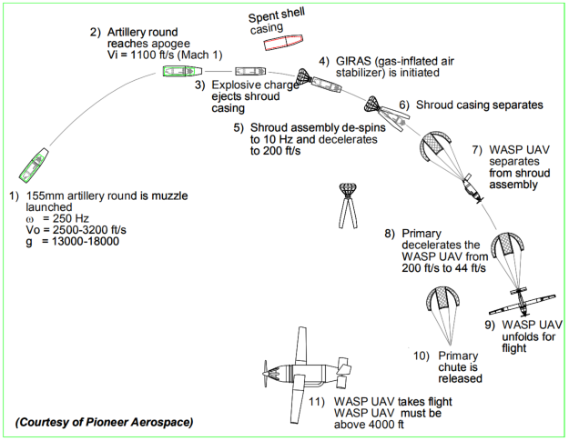从载机发射无人机的方式，也得到了很多验证。美国麻省理工大学研制的μUAVs，其过程如下：将无人机和保护舱一同从载机机舱中扔出，整体在降落伞作用下下滑，之后保护舱打开释放μUAVs，同时无人机机翼展开，μUAVs在控制系统作用下俯冲之后拉起至水平飞行，执行任务。
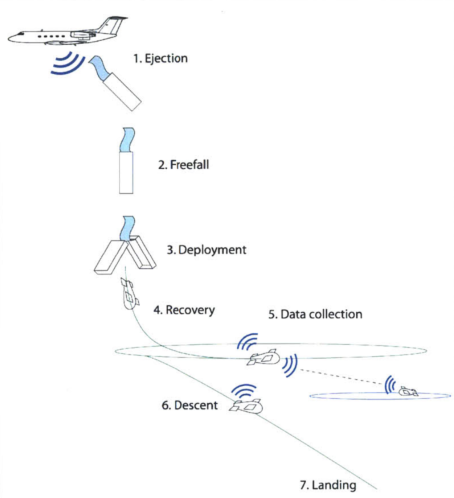
2015年9月16日，由美国国防预先研究计划局(DARPA)提出“小精灵”项目，旨在通过C-130运输机、B-52/B-1轰炸机等空中发射平台发射无人机群，并进行组网作战。目前已经在2010年和2015年分别完成了P-3、C-130H运输机的发射“郊狼”无人机的工作，其主要过程为，“郊狼”无人机折叠装在声呐浮标管中，发射后无人机脱离声呐浮标管并打开降落伞，通过降落伞减速、展开机翼并稳定后，脱离降落伞改为平飞飞行。
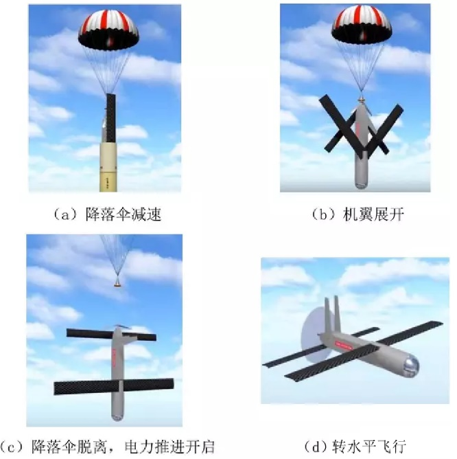
以上的方式均为将无人机与其保护舱一同扔出并打开降落伞，待整体减速后，无人机弹出展开，部分还有二次减速，之后拉起平飞。其第一阶段为保护舱与无人机一同减速，抛出的整体重量将会加大，对投放平台的反作用也会更大，同时对减速伞要求较大。如果直接投放出无人机，则过程将更加简单，但是也对控制系统提出了更高的要求。 国内对于投放型无人机在2011年后也逐步开始了在该方面的研究。王正平2012年针对炮射侦察弹的工作特性，对侦察弹发射、分离、减速等阶段进行了分析，并用算例优化了侦察弹进入展区的方案，该算例只对纵向飞行过程进行了研究。刘畅2014年对伞降式小型无人机的运动规律、“初始转平飞”过程进行了研究，并采用俯仰角反馈的控制结构设计控制律，对伞降无人机进行了试验验证。其研究过程为无人机俯冲开伞，之后切伞改平，但是此过程忽略了投放初始时刻无人机速度低、大迎角的阶段。李增彦2015年通过仿真实验，分析了巡飞弹拉平段飞行特性，得到巡飞弹飞行过程中的飞行特点，但是没有对控制结构进行改进，保证飞行过程的稳定性。李增彦[13]2017年对无人机在空投后俯冲滑下过程中的姿态不容易确定的问题，提出自适应参考矢量权重及自适应姿态估计方法，可以对投放过程特殊的姿态进行确定。 2018年中科院力学所在酒泉卫星发射中心，首次使用浮空器搭载不同气动布局的宽域飞行器缩比模型，上升至预定高度和区域后，将飞行器分离，记录下落、加速、跨越声障、气动弹起、开伞、落地回收等飞行过程，进行“自由飞”实验。模型在动基座上直接投放，确保其稳定下落也是非常重要的，但是对其控制方式没有介绍。| 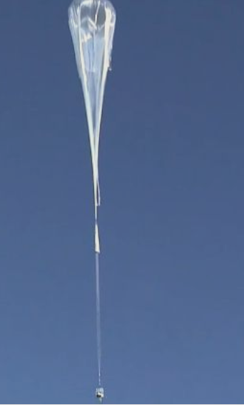| 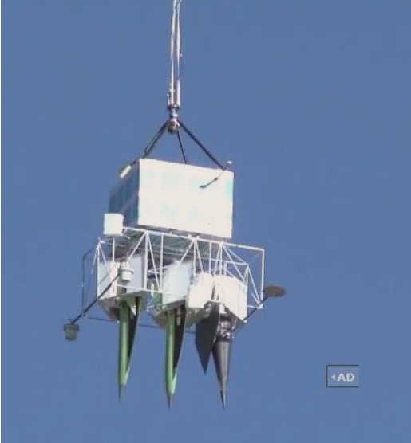 |
| —- | —- |
- 控制方法对比研究
无人机在投放时，俯仰角从-90°变化到0°，速度从0加到巡航速度，状态改变较大，控制器应当经过良好的设计，以具有良好的鲁棒性。
PID算法在工业过程控制中的应用已有近百年的历史，PID算法具有结构简单、参数易于整定, 再加上人们在长期使用中积累了丰富经验，PID控制算法在工业控制中得到广泛应用。而串级PID将内外两环并联调节，相当于把两个普通PID 套起来，外环为姿态角，内环为姿态角速度。将当前姿态角减去期望的姿态角度作为外环的输入数据，将外环的输出角度误差作为内环的输入数据，即内环是速度，外环是本身误差。这样能够增加系统的稳定性、抗干扰性，同时调节系统缓慢过度。
模糊PID控制，即利用模糊逻辑并根据一定的模糊规则对PID的参数进行实时的优化，以克服传统PID参数无法实时调整PID参数的缺点。信息简单的模糊处理将导致系统的控制精度降低和动态品质变差。若要提高精度就必然增加量化级数，导致规则搜索范围扩大，降低决策速度，甚至不能进行实时控制。
滑模变结构控制是指通过设计变结构控制器，迫使系统状态从状态空间的任何一点到达系统设计的滑模面，使系统在受到外界干扰和参数摄动的影响时具有不变性。因此，滑模变结构控制方法具有较强的鲁棒性，能同时应对内部和外部的不确定性因素。但滑模变结构控制在切换过程中会出现十分明显的抖动，这对于投放型无人机在初始时刻不在飞行包线内十分非常危险的。
自抗扰控制技术 ( ADRC)是由我国学者韩京清提出的，是在非线性 PID 控制方法基础上发展起来的一种新型非线性控制方法，该方法能够对复杂不确定系统的“总扰动”进行实时估计并对其进行补偿，从而具有极好的鲁棒性。同时，自抗扰控制具有结构简单、控制效果好等特点，非常契合高空投放无人机投放过程存在扰动、模型状态变化等特点。
此外，还有其他的现代控制方法，如非线性动态逆、反步法等，其对模型精确度要求较高，且鲁棒性不佳。
主要研究内容【要做什么】
根据之前的研究，本论文将针对无人机基于动基座投放到成功拉起的控制方法展开研究。高空投放型无人机通常为可折叠的形态，同时为避免横纵耦合严重等问题选择常规式布局无人机，经考虑后，选择以色列提出的迷你“哈比”无人机作为本论文的研究载体。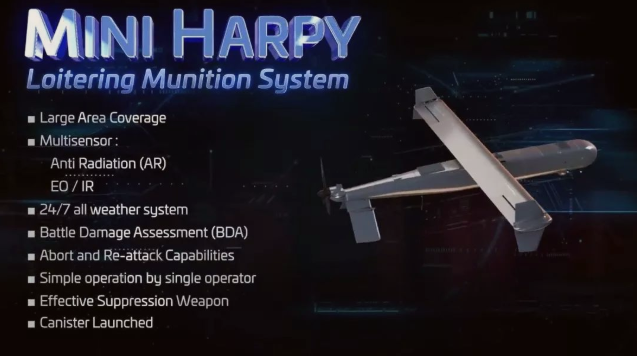
整个投放过程如下：高空气球等运载平台将高空投放无人机带到高空后，将无人机以90°的俯仰角投下，因运载平台会随着气流飘动，无人机的初始姿态会有较大变化。之后，无人机俯冲加速至大于失速速度，由控制系统拉起进入平飞或常规下滑状态。
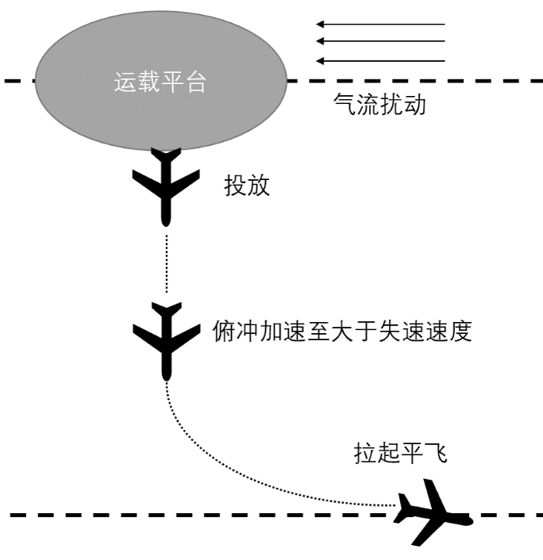
本论文将对此过程进行如下研究： 设计经典控制律——串级PID，根据高空投放无人机在投放后获得的初始速度、姿态角等初始状态，将经过以下的方式改平，
- 设计经典控制律，根据高空投放无人机在投放后获得的初始速度、姿态角等初始状态，通过不同的控制方式改平。
- 除了初始扰动外，高空的风场也会使无人机的飞行、改平过程更加困难，考虑在风场作用下的控制效果及安全投放窗口。
- 无人机在投放过程中，速度从0加到巡航速度，俯仰角从-90°过渡到0°，状态明显，而经典控制律鲁棒性不好。因此在经典控制律之外，使用鲁棒性更好的自抗扰控制等对无人机进行控制，扩大无人机的可安全投放窗口。
- 搭建半物理仿真平台，对飞控系统进行验证，对投放的方式对整个过程验证。
- 使用一架常规布局的模型飞机装载飞控系统进行飞行验证。
研究方案【怎么做】
本论文将通过以下的方式展开研究：- 建立高空投放无人机全机系统模型，设计经典控制律完成对无人机的常规飞行控制，包括无人机的姿态控制、速度控制、轨迹控制，并使用半物理仿真平台验证；
- 根据无人机的外形、气动方案，建立全机数字模型；
- 以经典PID控制律完成对无人机内环控制，外环使用L1控制轨迹；
- 建立实时仿真平台，使用飞机的数字模型与真实的飞控系统连接，验证控制律可行性。
- 高空投放无人机在投放后获得的初始速度、姿态角等初始状态，通过以下的方式改平。
方式一：在俯冲加速过程中，控制系统如何将无人机拉起至平飞状态以及可控的投放姿态的范围——安全投放窗口；
方式二：经减速伞稳定、减速作用后，控制系统将更加轻松将无人机拉起，但是需考虑切伞后无人机受到的扰动等，同时求出此时的安全投放窗口。
- 使用经典控制律对无人机投放过程仿真，以不同的初始姿态投放，经飞控系统拉起，确定无人机可投放的安全窗口；
- 以不同的初始姿态角、姿态角速度（模拟运载平台在空中受扰动的情况）将无人机投放，确定飞机可安全拉起的初始姿态，即为无人机可投放的安全窗口；
- 建立恒定风场模型，在风场作用下，以不同的初始姿态投放无人机，确定有风作用时的无人机可投放安全窗口；
- 使用实时仿真平台，校验上述过程。
- 增加减速伞模型，减速伞可以让无人机更快稳定，相对于上一步，会有更大的可投放窗口；
- 在无人机的尾部增加减速伞（增大阻力，并使无人机尽快稳定），根据拉起时的速度确定减速伞的大小，建立减速伞模型；
- 在减速伞的作用下，无人机可以更快稳定，因此无人机的安全投放窗口会扩大，但是也会带来新的问题，无人机在切伞的瞬间，将会带来姿态的较大改变，因此控制策略要确保切伞后无人机的稳定；
- 在减速伞与风场同时作用下，确定无人机的安全投放窗口；
- 使用实时仿真平台，在半物理仿真的模式下，通过数字模型验证飞行控制系统；
- 在保证安全的情况下，使用模型飞机进行飞行试验，验证飞行控制系统。
- 学习现代控制理论，使用先进控制方法设计控制律，对投放过程进一步研究。设计自抗扰控制律，对无人机投放过程进一步研究，争取扩大无人机的投放安全窗口。
- 建立高空投放无人机全机系统模型，设计经典控制律完成对无人机的常规飞行控制，包括无人机的姿态控制、速度控制、轨迹控制，并使用半物理仿真平台验证；
工作量估计
- 继续搜集资料、阅读相关文献；
- 完成无人机的模型建立，考虑大迎角时的非线性特性，建立风干扰模型等，设计经典控制律对无人机的内外环进行控制；
- 搭建实时仿真平台，使用飞控系统与飞机的数字模型连接，实现半物理仿真，其中飞控系统由设计方编写以上的控制律；
- 以不同的初始姿态，在有风与无风的条件下，针对投放过程仿真，确定无人机的安全投放窗口，并进行半物理仿真；
- 以不同的初始姿态，增加减速伞的作用，针对投放过程进行仿真，确定带伞情况下，无人机的安全投放窗口，并进行半物理仿真；
- 使用自抗扰控制等控制方案，对无人机投放过程进一步研究，争取扩大无人机的投放安全窗口。
预期达到的水平
- 建立高空投放无人机的全过程数字仿真模型；
- 确定无人机投放后可以安全拉起的初始姿态范围；
- 使用半物理仿真的方式对无人机飞控系统进行验证；
- 使用模型通过飞行验证飞控系统的正确性；
- 使用先进控制策略，扩大无人机的安全投放窗口。
存在的问题及拟采取的解决措施
- 投放过程中初始姿态角大、速度低，气动效率不足
使用重力加速到大于失速速度再进行控制。对于初始姿态角过大的情况，设计合适的减速伞，使得无人机尽快解旋。 - 无人机控制律的设计
为了更好地从俯冲到平飞控制无人机，控制律应当有很好地鲁棒性，本论文将使用串级PID、自抗扰等方式设计控制律，确保无人机可以在多个状态下稳定。 - 无人机控制系统的准确性、可靠性
使用实时仿真系统搭建半物理仿真平台，对设计好的控制律进行仿真验证；在条件允许的情况下，对投放过程进行实际飞行验证。
- 投放过程中初始姿态角大、速度低，气动效率不足
研究时间安排
2021.1-2021.3 利用Matlab/Simulink建立高空投放无人机全机系统模型，包括降落伞、风场等，设计经典控制律，完成高空投放无人机的姿态控制、速度控制、轨迹控制。
2021.3-2021.4 使用经典控制律，完成高空投放无人机从空中投放到平飞过程的控制，确定其在有风和无风不同条件下的安全投放窗口。
2021.4-2021.5 不改变控制律，增加降落伞的条件下，寻找合适的降落伞，使得无人机尽快过渡到平飞，确定此时的安全投放窗口。
2021.1-2021.5 与飞控方合作完成飞控系统中飞行控制律的编写，使用实时仿真，完成飞控系统与数字模型的半实物仿真连接。
2021.5-2021.6 使用半物理仿真的方式，对以上各个状态进行控制与验证，并解决半物理仿真中发现的问题。
2021.6-2021.7 使用模型飞机装载飞控系统，验证飞行控制律。
2021.7-2021.9 使用自抗扰等控制策略设计控制律，对投放过程进行进一步优化。
2021.10 汇总，撰写论文。参考文献
开题问题提问
背景：
- 为什么投放
快速升空、群机技术 - 意义：
提出技术问题：展开、变构型
文献综述：
- 国外无人机投放研究的问题
- 国内：火星无人机、中科院—运输机抛撒模型
- 控制方法研究对比
内容、方案：
- 研究内容丰富，具体内容大致按目录
- 进度安排，时间节点
文献：
至少20-30篇
中期检查0630
论文整体状态
第一章 绪论
1.1 研究背景及意义√
1.2 国内外研究现状√
1.3 本文研究内容√
第二章 空投无人机动力学建模及飞行特性分析
2.1 空投无人机布局及总体方案√
2.2 空投无人机动力学建模√
2.3 空投无人机飞行特性√
2.4 空投无人机巡航状态控制设计√【PID、ADRC、L1】
第三章 空投无人机投放控制策略
3.1 投放理论研究○待完善
3.2 投放控制律设计√
3.3 投放+PID控制√
3.4 投放+ADRC控制○待完善
第四章 XXX半物理仿真
4.1 半物理仿真平台搭建(HIL)
PIHAWK、Simulink、硬件在环仿真
4.2 巡航状态控制律半物理仿真与验证
4.3 投放过程控制律半物理仿真与验证
4.4 空中投放飞行实验验证
第五章 动基座及风场对投放控制的影响
风场影响研究
水平风【初速度、过程】、垂直风
动基座影响研究
与风场耦合【风与速度】、球的大小
减速伞作用下的投放研究
第六章 总结与展望
1. 绪论
研究背景及意义
国内外研究现状
本文研究内容
整个投放过程如下：高空气球【去掉】等运载平台将高空投放无人机带到高空后，将无人机以-90°的俯仰角投下，因运载平台会随着气流飘动，无人机的初始姿态会有较大变化。之后，无人机俯冲加速至大于失速速度，由控制系统拉起进入平飞或常规下滑状态。投放方式，避免涉密
本论文针对无人机基于动基座投放到成功拉起的控制方法进行研究。本文从实际的角度出发，针对无人机如何从动基座上安全投放进行控制相关的研究，从无人机的建模、仿真、半物理仿真、实际飞行各个阶段逐步展开研究。控制策略—控制方法
不同的策略使用不同的方法
半物理仿真-
2. 空投无人机动力学建模及飞行特性分析
空投无人机布局特征分析-mini哈比
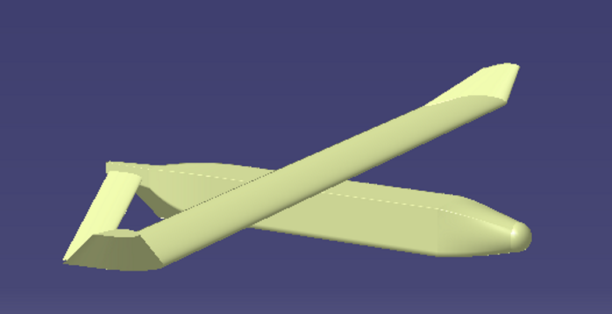
V=18.17m/s
| 重量 | 3.86kg | 参考面积 | 0.245 m2 |
| :——- | :——— | :—————— | :—————————- |
| 翼展 | 1.4 m | 平均气动弦长 | 0.175 m |
| 螺旋桨 | 16*12 | 电机 | 双捷SVTECH-U5 KV440 |空投无人机动力学建模
六自由度模型
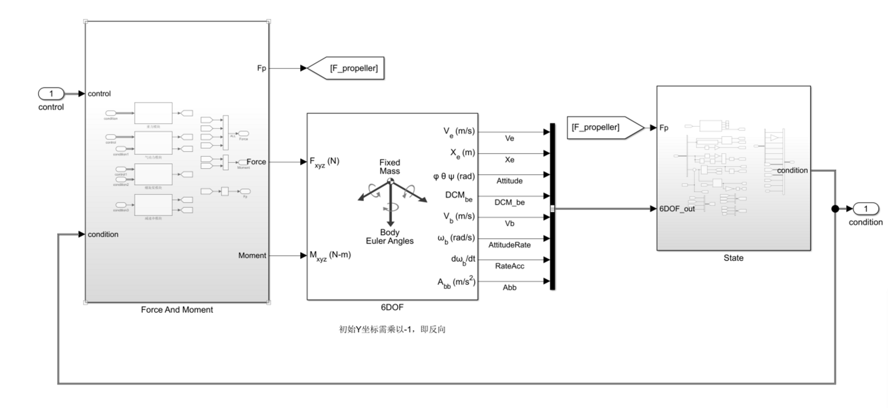
包括重力、气动力、螺旋桨、减速伞等模块
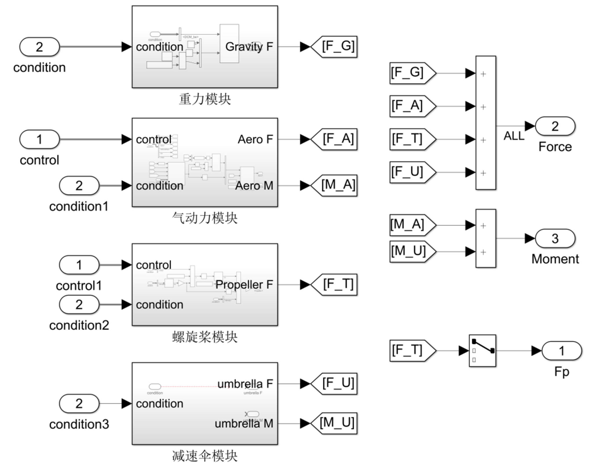空投无人机飞行力学特性分析
V=18.17m/s
纵向：
Cma= -0.4579，CLa= 3.8347，Margin=-11.94%
短周期0.59，长周期0.065
横航向：
Clb= -0.0745，Cnb= 0.0387
荷兰滚0.253，滚转收敛时间常数0.0237，螺旋稳定空投无人机巡航状态控制设计
姿态控制
串级PID：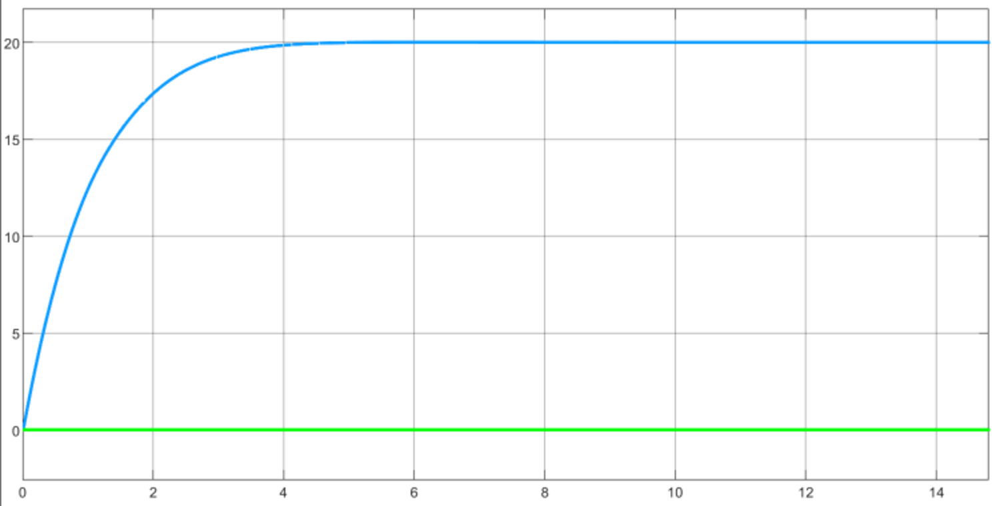
一阶线性ADRC：
安排过渡过程
一阶线性ADRC：误差 $e=v_1-y$
线性状态观测器
外环控制
L1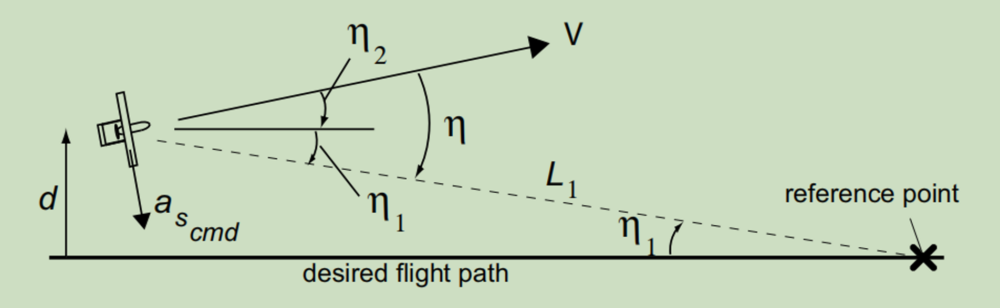
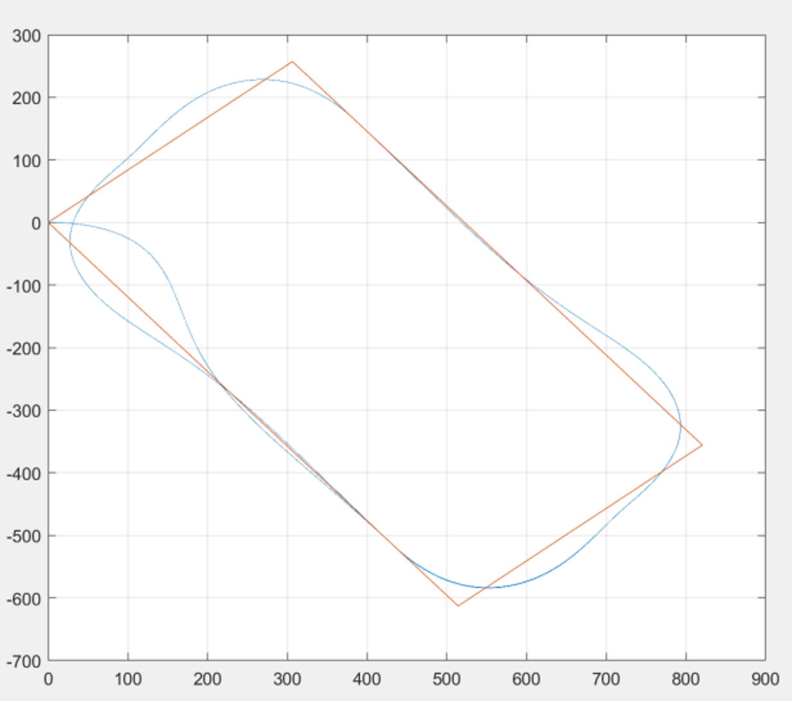
3. 空投无人机投放控制策略
投放方式影响研究
动力开关、自然状态、水平投放【影响主机】、斜着划出、飞出包线
最小损失高度，无人机重力加速最大损失高度，最快拉起，保证不失速
投放控制律设计
速度控制俯仰角其中，$K_{V \theta}=0.4,K_{V \theta I}=0.1,T_V=0.5$，$-90^o\leq\theta_g\leq10^o$。
投放+PID控制
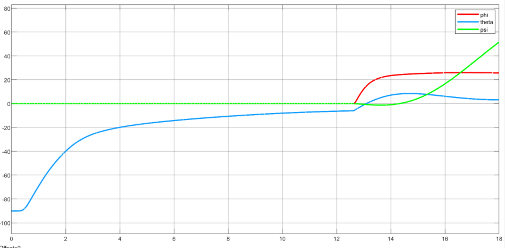
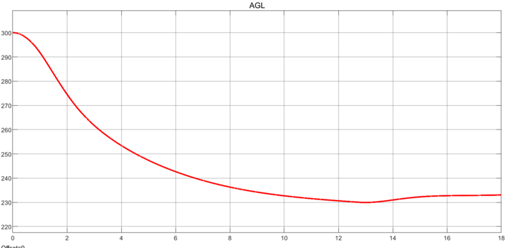
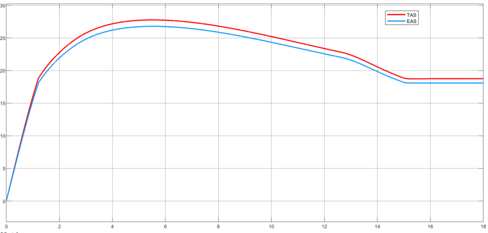- 投放+ADRC控制
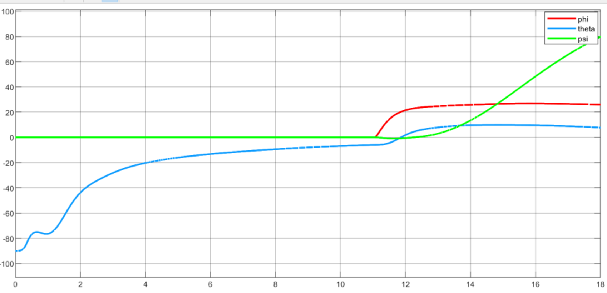
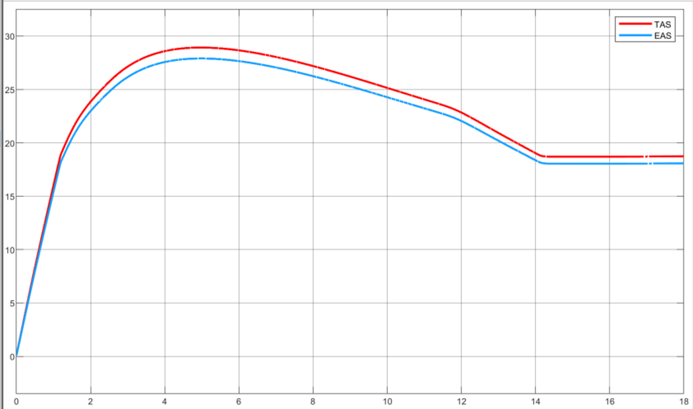
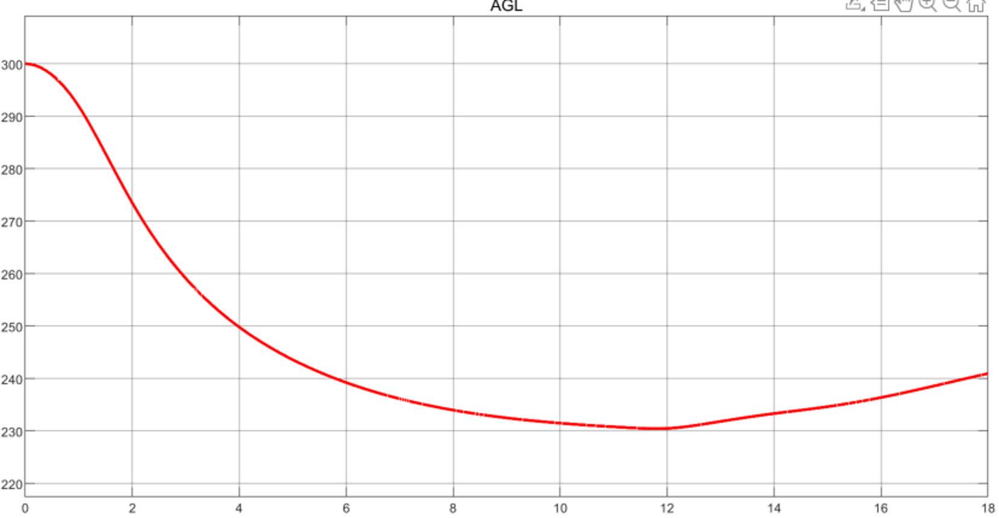
4. XXX半物理仿真
半物理仿真平台搭建(HIL)
PIHAWK、Simulink、硬件在环仿真巡航状态控制律半物理仿真与验证
投放过程控制律半物理仿真与验证
空中投放飞行实验验证
5. 动基座及风场对投放控制的影响
风场影响研究
水平风【初速度、过程】、垂直风动基座影响研究
与风场耦合【风与速度】、球的大小减速伞作用下的投放研究
6. 总结与展望
安全投放角度（附）
| 初始速度(m/s) | 0.01 | 1 | 2 | 3 | 4 | 5 | 6 | 7 | 8 |
|---|---|---|---|---|---|---|---|---|---|
| 最大初始俯仰角/⁰ | -72.4 | -64.5 | -56.7 | -47.4 | -36.0 | -21.2 | >0 | >0 | >0 |
| 最小初始俯仰角/⁰ | -107.5 | -113.1 | -118.7 | -125.3 | -133.2 | -142.7 | -154.6 | -171.2 | <-180 |
答辩
评审意见一
该硕士学位论文以小型无人机为例，从力学建模、控制仿真、飞行实验方面，对无人机飞行控制器的控制律及拉起策略开展研究，选题具有理论意义和应用价值。
论文的主要结果有：
（1）建立了空投无人机的动力学模型，并设计了巡航段的控制律。经过仿真验证，无人机可以对目标轨迹进行精确跟踪。通过在姿态角速度中增加速度增益系数，实现了无人机在不同速度下的动态调参。
（2）研究了投放过程的控制策略。基于拉起过程中不同状态的控制特性，得到拉起控制方案为：油门由速度控制器得到，依据俯仰角指令通过俯仰角控制器引导升降舵偏转。确定俯仰角指令：按时间序列得到俯仰角指令(策略一)，使用速度误差经过PID控制器得到俯仰角指令(策略二)，以及速度直接拟合函数得到俯仰角指令(策略三)。由于策略三在全过程中迎角更小，基于策略三得到无人机可投放窗口。
（3）搭建实时硬件在环仿真平台，验证了飞行控制器的控制效果及拉起的控制逻辑，使用该控制器针对原理样机进行了投放飞行实验，得到了很好的控制效果。
（4）对于高空20km，分别在无风、顺风、逆风条件下投放，调整策略后可以实现无风、逆风条件下的拉起任务，逆风可以减小无人机进入无动力下滑的高度损耗，顺风下无人机将以失速姿态俯冲下降。设计自抗扰姿态控制器，实现了巡航高度下姿态、拉起的控制，自抗扰控制器有更好的鲁棒性。
论文写作态度严肃，科学，叙述清楚，图表规范，工作量饱满，取得了以上研究结果。论文表明作者已掌握本学科的基础理论和专门知识，具有独立从事科研能力。
论文达到硕士学位论文的水平，同意进行答辩。
评审意见二
论文选题立足于学科前沿，有重要的研究价值和工程意义。
论文研究内容安排合理，研究方法正确，技术路线清晰。
论文工作量饱和，有一定的创新性，满足硕士学位论文要求。
作者具有较强的独立开展科研工作能力。
是一篇优秀的硕士论文。
问题：
1、文中的投放平台是静止在空中的吗？有关的顺风和逆风条件是如何定义的？
2、实际飞行试验中获得了哪些数据？得到了哪些飞控系统设计验证结论？
答辩会议记录
1.控制操纵是在什么时候开始的？
答：在投放后的一瞬间，便开始控制的操纵。过程中，升降舵是全程在操纵的，而油门是根据速度做出判断。整个过程要求无人机的迎角不超过失速迎角。
2.对速度的控制，是使用升降舵控制的吗？
答：在拉起的过程中，主要依靠重力和螺旋桨推力加速，升降舵来调整俯仰角的变化。而在巡航状态下，主要通过速度反馈产生油门值，从而改变速度。
3.飞行实验中，速度可能是存在误差的，如何对速度进行测量与修正？
答：在无人机上装有空速计，实时测量速度并记录到飞行控制器中，在试验后可以调取。根据飞行实验结果，截取一段较为稳定的数据，可以发现，在高度、速度基本不变的状态下，俯仰角为0°左右，因此可以推断得到真实飞行的迎角为0°，此时测量得到的速度为24m/s。而仿真过程中0°迎角时的速度，应当为18m/s。因此可以推断出仿真使用的升力系数偏大，我们进行适当的修正。
4.在推断得到副翼舵量大时，提出的修正方案为减小舵面或增加惯量，此处是否不妥？
答：副翼的舵量大，正常情况下应当减小舵面积。提出增大惯量，仅在理论角度考虑了，而实际中，不应当增大惯量，确实考虑不妥。
5.拉起过程应当对过载进行进一步的考虑，文中没有这一状态是如何考虑的？
答：升降舵操纵对过载的影响的确比较大，而本文的无人机考虑到其速度较低，在整个过程中过载的量级也比较小。另一方面，迎角与过载是一个相通的物理量。因此本文考虑整个过程中的迎角小于失速迎角，作为关键变量。
6.半物理仿真平台是实时的吗？
答：无人机的数字模型是在实时目标机中运行的，因此模型是实时的，而飞控平台是实时的，而地面站在收到数据后会立即转发，不会影响实时性，因此整个系统是运行在实时平台上的。
阅闻会议记录
1.你认为我们还需要做那些工作，才能让太阳能无人机真正进入到军民用这个领域？
答：我认为当前主要是太阳能电池和储蓄电池技术上的瓶颈限制了太阳能无人机的发展，如果能够提升这些方面的技术，使得太阳能无人机的航时进一步提升。在航时得到提升的情况下，太阳能的各方面性能便可以得到提升，如结构强度、载荷重量等方面。如此便可以让太阳能无人机的应用拓展到军民用领域中。
2.既然可以利用风能，那么在什么条件下，风梯度便够用了？
答：我做了很多研究，包括有风与无风的各种情况，风的梯度大概有0.001的量级，有风情况下的高度储存比无风情况下高几十米左右。当前风梯度只能够使得太阳能无人机通过特定飞行方式获得辅助能源，并不能向太阳能和储蓄能源那样，单独为飞行提供能量。
3.在考虑风的影响时，有考虑升阻比和侧滑角的影响吗？
答：在飞行仿真的过程中，考虑了迎角对气动力的影响，但没有考虑侧滑角的影响。在第二章的能量模型中，通过雷诺数和迎角来建立气动模型。而整个飞行过程中，无人机转弯的时间和角度都很小，因此对能量的损耗也比较小，可以忽略侧滑角的影响。
4.在能量的综合利用方面，太阳能和风能都能转化为重力势能，你有考虑在转化过程中，太阳能和风能的耦合情况吗？
答：这方面的内容在4.5节风梯度对高空长航时飞行的影响中有说明，在太阳能转化为重力势能存储和释放时，风梯度的作用就是使爬升高度增加和滑翔时间延长。